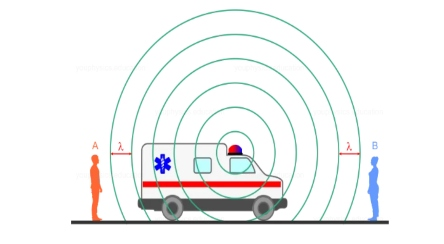
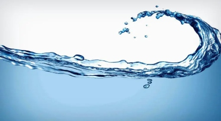

La densidad es una magnitud escalar referida a la cantidad de masa en un determinado volumen de una sustancia.
Lentes opticos
Un lente es un dispositivo óptico transmisor que enfoca o dispersa un haz de luz por medio de la refracción.

Efecto Doppler
Es el cambio de frecuencia de una onda producido por el movimiento relativo de la fuente respecto a su observador.
Electromagnetismo
Describe la interacción de partículas cargadas con campos eléctricos y magnéticos.

Fluidos
Se denomina fluido a un tipo de medio continuo formado por alguna sustancia entre cuyas partículas solo hay una fuerza de atracción débil.
Conservacion de la energia
La cantidad total de energía en cualquier sistema físico aislado permanece invariable con el tiempo, aunque dicha energía puede transformarse en otra forma de energía.